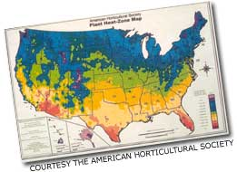

Remapping The Zone
American Horticultural Society (AHS) has developed the new AHS Plant Heat-Zone Map in response to the high temperatures associated with the overall global warming pattern.
April/May 2001
Issue # 185 - April/May 2001
In response to the high temperatures associated with the overall global warming pattern, the American Horticultural Society (AHS) has developed a new map that divides the U.S. into 12 zones based on the number of heat days (more than 86 degrees Fahrenheit) each zone gets annually. Data was collected from 4,745 weather stations between 1974 and 1995, and the AHS has spent the last three years coding every garden plant and flower using these numbers.
Although heat doesn't kill the same way frost does, heat stress can be quite debilitating to some plants. "[It's] like having an ER episode in your garden every week," says Dr. H. Marc Cathey, author of Heat-Zone Gardening and AHS president emeritus, who worked on the last update of the USDA Plant Hardiness Zone Map.
The AHS Plant Heat-Zone Map will help gardeners adapt to the changing length in their growing seasons, which, incidentally, make plants more susceptible to frost damage because they flower earlier in the spring. According to Dr. David W. Inouye, a University of Maryland biologist, frost events "may become more frequent in some areas and less frequent in others."
Expect to see heat zone and hardiness zone numbers on plant catalogs and seed packet labels, if you haven't already.
-TanyaZimbardo
|
 |
|
|